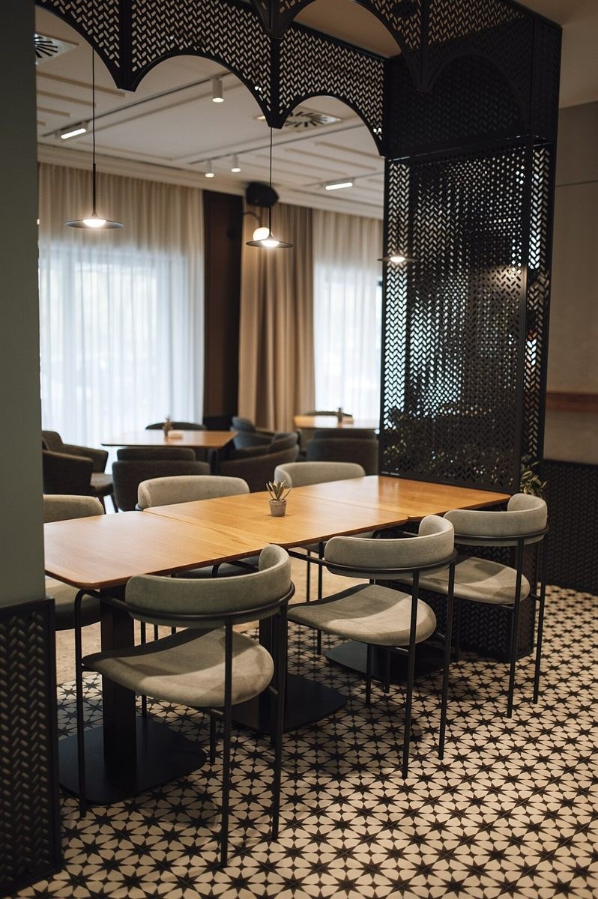
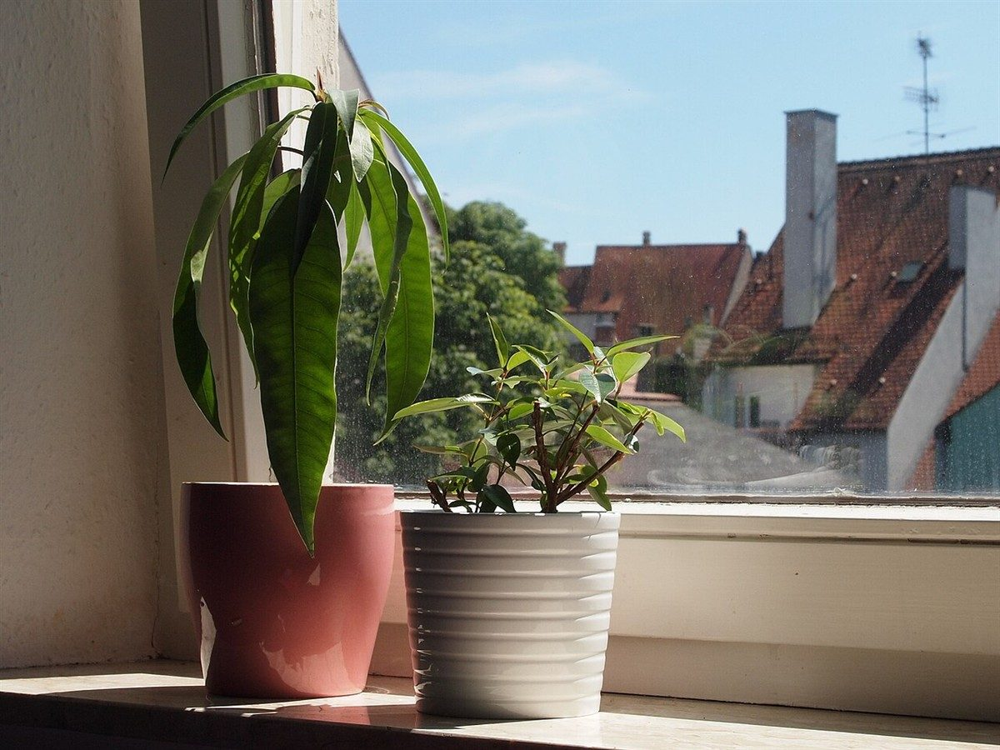

店のこと
店のこと
お店について確認できているのは、所在地とInstagramのアカウントだけです。
「想像してみる」の部分は制作側が想像して書いたものです。お店の実際の様子・考え・メニューとは関係がありません。
確認できていること
- 店名は「喫茶ポポラス」、業種は喫茶店
- 所在地は大分県佐伯市船頭町12-20
- 電話番号はなし。連絡はInstagramから
- 営業時間・定休日・メニュー・価格・ご予約・駐車場は準備中

想像してみる
「ポポラス」という名前から
由来は分かりません。制作側は、背の高い木が一列に並ぶ風景を思い浮かべました。実際のお店の姿ではなく、制作側の連想にすぎません。下の縦縞の写真も、その連想にあわせて選んだフリー素材です。


